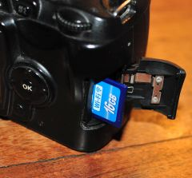

Step 2: Prepare the the Card's network
- Put your SD card into the camera or wherever else you want it to use
- Let it connect to the network.
- Enter the IP adress in the left field. You may also combine any hostnames or IP adresses by separating them with a comma.
- Click on "Check connection..." to test the connection. This may take a while.
If the network is currently not established, just enter the values and skip this step.
|
 |